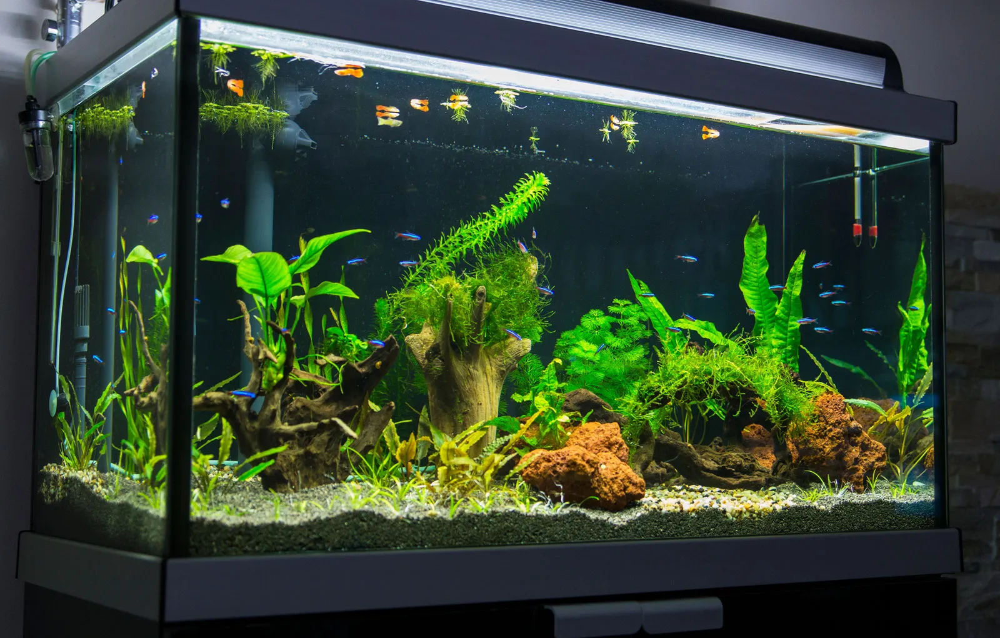
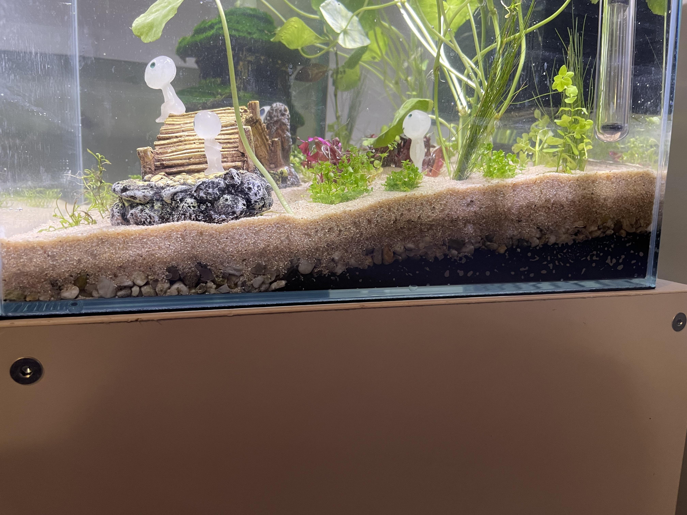
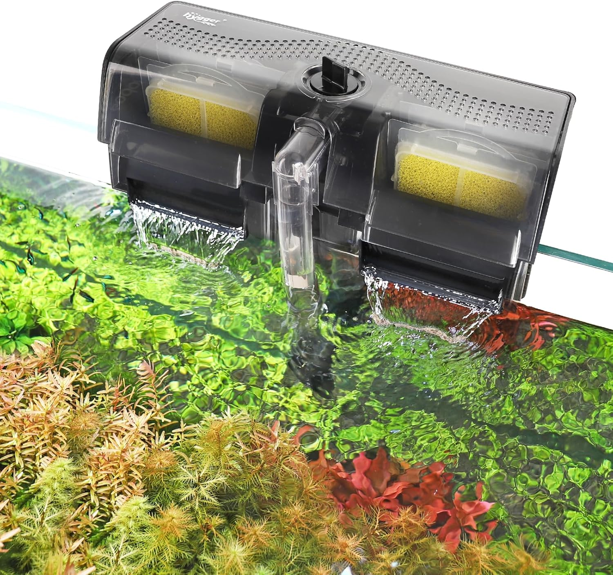
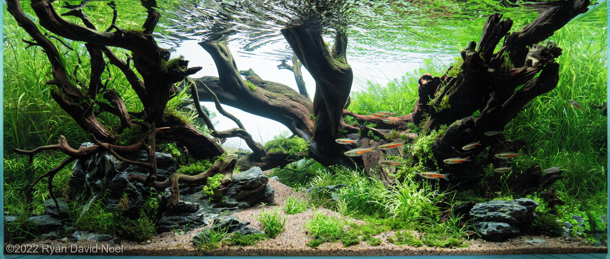
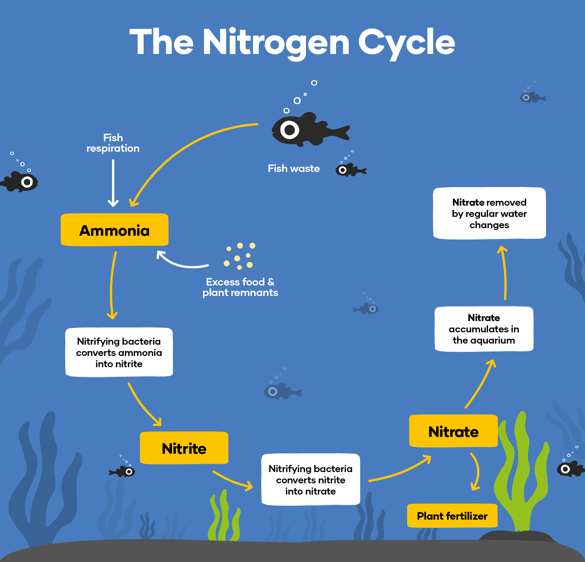
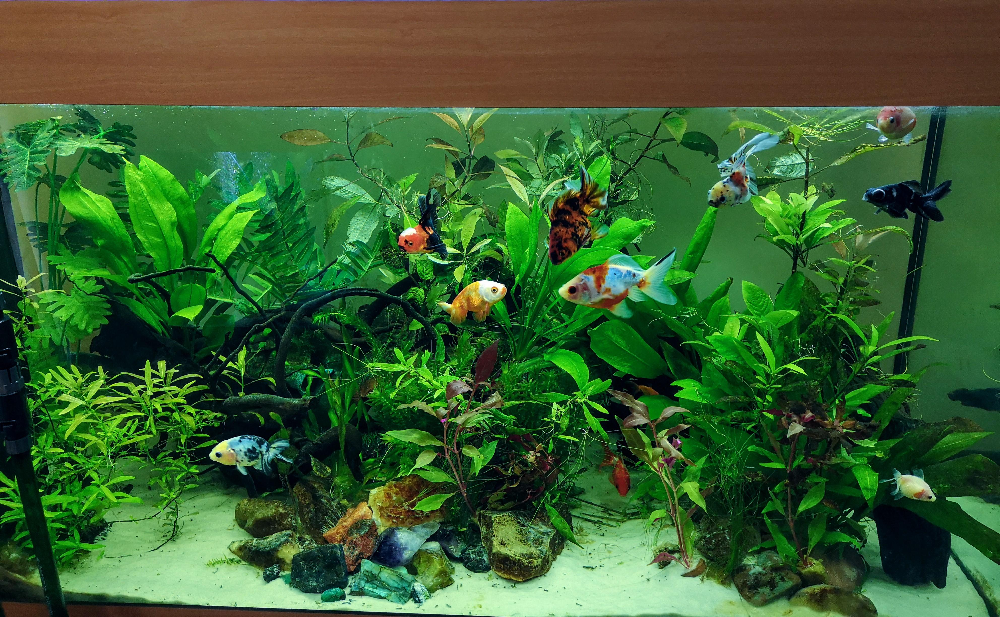

Starting a Planted Aquarium
Essentials - Gear - Timeline
Step 1: Select a Tank Size
To be able to establish a healthy ecosystem and enough space for the fish, a 5 gallon tank is the smallest recommended size. It is easier to maintain water conditions and plant health in a bigger tank. This is also determined by how many and the kind of fish you would like.

Step 2: Select a Substrate
Plants must be planted into a good substrate for them to root and flourish. While sand and gravel are good options, the best substrate is layered with aquasoil and capped off with sand. Aquasoil provides nutrients to the plants while the sand keeps everything in place.

Step 3: Lighting & Filtration
One thing every plant needs is good lighting. It is recommended to find an aquarium light that has a timer so the tank gets the appropriate amount og light. The tank also needs a reliable filter to keep debris out of the water. Choose a light/filter according to the size of your tank.

Step 4: Plants & Hardscape
This is the part when you can get really creative. Gather rocks, driftwood, plants, shells, etc. and arrange them in your tank. Remember: Many fish like hiding spots, so arrange them to where the fish can have a cozy space!

Step 5: Fill with Water & Cycle the Aquarium
Once you have stocked and arranged your tank, it is time to add the water and begin cycling the tank. Cycling means allowing the tank to grow beneficial bacteria, which helps process waste, making the tank self-cleaning. This process may take 4-6 weeks, and you can check the progress by getting a water PH testing kit.

Step 6: Add Fish
Once the tank has cycled properly, it is time to add the fish. Do not add the fish directly into the tank. Instead, add a bit of the tank water to the cup the fish is in to acclimate the fish to the waters temperature and state. This allows the fish to adjust. After about an hour of acclimation, your fish should be safe to be added to the tank!
